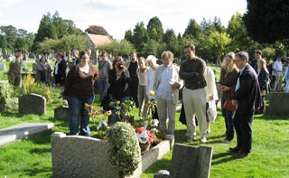

© 2021 Festival Art and Books. All rights reserved.
Oxonmoot 2010
or, "Let's meet in Oxford in September"
24th - 26th September, Lady Margaret Hall, Oxford
A weekend of Talking Tolkien, friendship and Fellowship, academic talks and papers, a fiendish quiz, an Art Show, Merry & Pippin’s Dance Workshop, a Dealers’ Room, and Enyalië (act of remembrance at Tolkien’s grave).
Oxonmoot is the special event of the Tolkien Society year held over the weekend in September, closest to the 22nd, in an Oxford College. Aside from meals and catching up over a drink with old friends there are academic, and informal, talks, workshops like Merry & Pippin’s Dance Workshop, a fiendish quiz, a dealers’ room with booksellers (new, secondhand and rarity specialists), an art show (with professional and amateur works). Of course there is also an opportunity to explore Tolkien’s Oxford, plus a quiet area where attendees can enjoy refreshments and chat with old or new friends. Naturally there is also a party including a masquerade (for those interested in costume making) as well as entertainments put on by members. It is a great time for making new friends in the Society. The Sunday is more sombre as there is Enyalië, a wreath-laying and short act of remembrance at Tolkien’s grave in north Oxford. Many members have met partners through Oxonmoot and aside from long-term relationships many others have had such a good time over the years that the farewell is no longer 'good-bye' but “Oxonmoot”, where the preceding ‘See you next ...’ goes unsaid.
Registration Rates:
£28 (members) or £33 (non-members), reduced rates for under-16s
until 31st July (add £7.50 to each rate thereafter)
Accommodation and meals available within Lady Margaret Hall College separately (see booking form for details)
Last date for advance bookings (registration, accommodation and meals)
3rd September ‘10
As noted above rates rise after 31st July, day rates may be available later.
E-mail enquiries: bookings@tolkiensociety.org
Call for papers
If you wish to present a paper, chair a discussion, run a workshop, or otherwise educate and entertain your fellow Tolkien fans during the day, please contact dte@oxonmoot.org
Closing date for papers etc is 14th August ‘10
The Tolkien Society is an organisation which contracts with Lady Margaret Hall for the use of facilities, but has no formal connection with The University of Oxford
Any queries regarding this Press Release should be addressed to: TS Publicity Officer, e-mail publicit@tolkiensociety.org

Oxonmoot: An Oxford college location

Oxonmoot: Enyalie